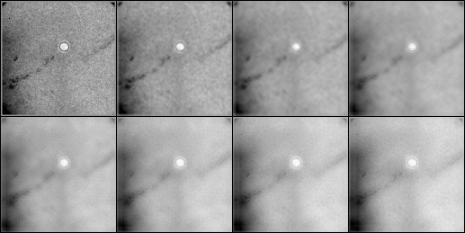

| .OPERATION: | AS F | ; Average Images - Find statistics & Q factor map |
| .FILE PREFIX OR TEMPLATE: | sav_lowpass_pp_stk@*** | ; Prefix of images (input) |
| .FILE NUMBERS: | 1-8 | ; Numbers of file names in the series |
| .AVERAGE FILE: | asf_avg | ; Average file (output) |
| .Q FACTOR FILE: | asf_q | ; Q factor file (output) |
| .INDICES FOR VECTOR LISTING: | 0 0 | ; No indices wanted |
| INPUT FILES | OUTPUT AVERAGE FILE | OUTPUT Q FACTOR FILE | ||
|---|---|---|---|---|
|  | | |||
| sav_lowpass_pp_stk_mon | asf_avg | asf_q |